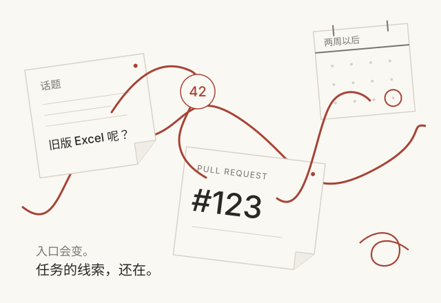
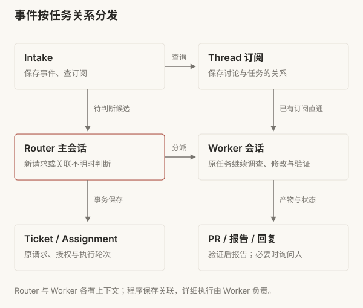
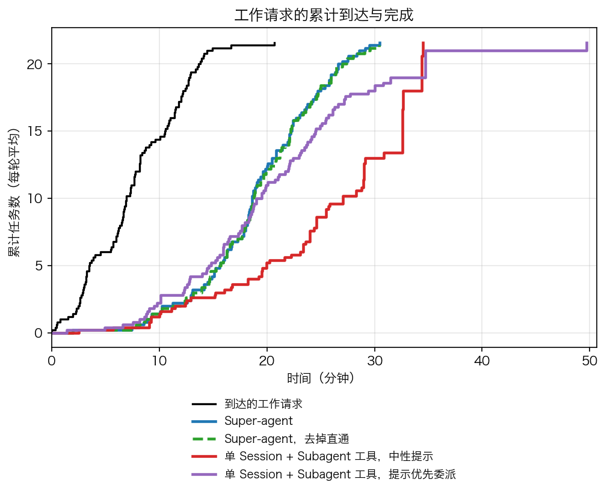

SYSTEMS / 01 · SUPER-AGENT
PR 合并以后，
谁接下一条反馈？
Super-agent 的任务分发与持续协作
假设你让 Agent 修复 CSV 导出的乱码。它提交 PR，评审通过，改动合并。两周后，同事在原话题里补充：“旧版 Excel 还是打不开。”

这时，需要继续的是同一件工作。系统得找到它的原始目标、旧讨论与代码，再根据现在的状态处理新反馈。如果每次都要人找回终端、复制消息、重新解释背景，会话管理就仍然是人的工作。
Super-agent 想接管这段续办流程。Router 判断任务关联，Worker 执行工作，程序保存任务与讨论的关系。 聊天、PR 和一次执行可以结束，任务的身份仍然保留。
本文以这次假设的 CSV 修复为线索，结合 DeepSeek Harness（dsh）团队原文与公开原型 6337fc8。案例用来解释路径，不是一次真实修复的实测记录。公开版经过整理，与 dsh 内部实例及文章设计不完全一致；对应的实现范围会在相关机制旁说明。
01一件工作，几个入口
需求是在群聊里提出的，而代码在 PR 里评审，需求后续的问题还是得回到群聊中讨论解决。
dsh 把职责分成两层。Router 维持跨任务的高层关联和对外交互；每个 Worker 在独立上下文中调查、实现与验证。Worker 可以再用子 Agent 完成复杂任务，但对上层仍表现为一个执行者。


CSV Worker 负责“这次 CSV 乱码修复”，不是所有带 CSV 字样的需求。先弄清这个边界，再看新消息会走哪里。
又来了一条 CSV 消息，会交给谁？
同一任务，追加输入
程序查到话题 A 的订阅，直接加入 Ticket-42 的输入，原 Worker 在后续步骤接收补充。
依据公开源码的三种输入示意，未实时运行模型。跨话题的旧任务关联需要明确指向；意图不清时仍可能判断错误。
同时查看三条消息的处理
| 新消息 | 路径与结果 |
|---|---|
| 原话题 A：“还要兼容旧版 Excel” | 程序查订阅，投递给 Ticket-42 的原 Worker。 |
| 话题 B：“PR #123 还要兼容旧版 Excel” | 明确引用帮助 Router attach 旧任务，建立新讨论订阅。 |
| 话题 B：“增加 CSV 导入功能” | 新目标；Router accept 新 Ticket 和 Worker。 |
同话题的补充由程序查订阅，直接加入原任务的输入队列。原型的 Intake.receive() 查 Thread.subscriptions，Executor 再通过 Harness 的 agent.steer() 把消息送进 Worker。正在运行的 Worker 在后续模型步骤接收补充，不需要先结束当前工作。
换一个话题时，“PR #123”这样的明确引用可以帮助 Router 找到原任务。它调用 orchestrator_route 选择 accept / attach / stop / ignore，宿主程序校验后执行。attach 建立新讨论与旧任务的关联，后续补充也能沿这条订阅找到执行者。
“增加 CSV 导入功能”是新目标，需要新 Ticket 和 Worker。仅仅主题相似不足以复用旧任务。同一话题也可能出现新目标：程序先按订阅送到原 Worker，Worker 发现超出范围后用 handback 交回 Router。


订阅是多对多关系。一个任务可以关联群聊和 PR，一个讨论也可以被多个任务订阅。人类追问直通后，Router 仍可能收到 follow_up 通知；节省的是再次分派等开销，不能把 Router 的后续推理成本算成零。
消息先过准入，再判断归属
真实环境里大多是闲聊、通知和背景资料。原文先用程序检查来源、范围和明确请求，再让模型判断需要理解语义的候选。公开版对应来源配置、策略准入和 Router 评估。过滤减少调用量，剩余候选的判断正确率仍需另测。


谁写实施提示词
Router 转交原始请求和简短路由背景，不临时编写修复方案。Worker 使用共同角色模板，结合原请求、团队交付规则、工作目录和仓库 AGENTS.md，自己定位代码并选择方案。
Router：新工作接单；明确指向旧任务才关联；主题相似不足以关联。转交原请求，不补实施计划。
Worker：读取原始请求与仓库规范；处理原范围的补充；其他请求交回 Router。
常规分发依据任务记录，源码调查属于 Worker。主动观察的候选是例外：Router 可用有界只读工具检查具体范围是否符合接单规则。Router 在公开版仍保留 Bash 等工具，“不亲自实现”包含提示词约束，不能描述成完全的工具硬隔离。
02让任务的身份留得比会话更久
为了让“旧版 Excel 还是打不开”回到同一项修复，系统需要保存几种不同的东西。它们不是四个 Agent，而是四类记录。
| 记录 | 在这次修复中是什么 |
|---|---|
| Trigger | 这条反馈的消息 ID、发送者、时间、原文和引用 |
| Thread | 原群聊话题或 PR 下的一段连续讨论，以及订阅它的任务 |
| Ticket | “修复 CSV 乱码”的目标、原请求、授权、输入与交付状态 |
| Assignment | 这项任务的一轮执行，包括启动、投递和报告 |


新任务建立新 Ticket 和 Worker。旧任务重新开始，可以新建 Assignment，同时复用固定 ID worker-<ticketId> 的原 Worker。任务身份与执行轮次分开，才能解释“工作已经结束，为什么还能续办”。
主会话不必一直装着全部历史
dsh 把有限的模型窗口看作缓存。近期很可能用到的摘要和引用直接放进窗口，即 Inline；完整、低频或太长的内容留在窗口外，按需读取，即 Spill。
当前反馈可以带原任务摘要和读取入口，Router 再沿引用展开：
反馈 → 所在讨论 → 相关任务 → 最近报告 / 另一个已绑定 PR


原文称它为链式召回：每次读到的对象带下一跳摘要与 ID。公开原型的候选卡片提供相关 Ticket 的标题、状态、最近报告预览和读取入口，完整任务、事件及订阅保存在 SQLite，执行记录由 Harness 保存。
Router preset 使用 Harness 的会话压缩与工具结果裁剪；提示词要求压缩后重新查看任务摘要。模型窗口的压缩不会删除数据库订阅，因此模型忘记了旧细节，已绑定讨论仍能按关系投递。
有编号、有引用的资料可以取回。“几个月前那个导出问题”没有明确引用时，仍要查找、判断信息是否相关和有效。公开材料没有给出稳定的模糊长期召回实验。链式召回和跨月记忆可靠性是不同问题。
两周后怎么重新开始
原任务结束后，讨论订阅保留。人类在原话题或已合并 PR 下补充问题时，程序检查原授权有效、任务没有被人明确停止，然后新建执行记录，恢复原会话和目录。
恢复通知要求 Worker 检查当前工作目录、Git 历史和 PR 状态，只续办原范围的补充，超出范围交回 Router，避免重复已完成的动作。历史提供背景，现在的代码决定怎么继续。
会话保留时，通常只追加恢复通知和新输入，不重复注入已有的原始说明；会话不存在时，才重新建立并提供原请求。系统不能凭空补回已删除的完整模型上下文。输入按消息 ID 去重，并区分未投递、已投递和已经进入会话历史的状态；旧讨论可分页读取。
运行中的任务追加输入；空闲 Worker 开始下一轮；结束的 Ticket 需要重新开启执行。被人明确停止的 Ticket 不会由普通后续消息自动恢复，机器人和 CI 也不会自动唤醒已结束任务。
03程序可以保持一致，任务仍可能重复
再看一个假设的故障窗口：系统答应接单，Worker 启动前进程退出。只在聊天里说“我会处理”不能帮助恢复；系统需要同时保存任务和待启动动作。
公开原型采用单机状态目录锁、SQLite 事务和持久 Effects 队列。接单时，把 Decision、Ticket、Assignment、订阅、待启动动作和确认消息写进同一事务；失败回滚。Worker 启动与对外发送在提交后执行，崩溃后可以继续派发队列。

事务不占用模型思考的整段时间。程序在每次工具调用时用短事务读当前状态、执行合法动作。投递前也重查 Ticket 和 Assignment，避免任务已停止或接管之后仍按旧判断动作。
另一个窗口更难：外部消息已发出，本地还没存回执就退出。SQLite 和飞书、GitHub 没有共同事务，仍需稳定 ID、幂等、会话历史检查或渠道回查。Worker 自己执行的 Git 与 PR 操作也要在恢复时核对真实状态。这套机制不能保证所有操作严格只执行一次，也不是多个 Router 副本的分布式一致性协议。
两个 PR 改到同一个文件，会怎样
两个人在不同讨论描述同一个缺陷，产生不同 Trigger。Router 都当成新任务，就可能创建两个 Worker、两个 PR。消息 ID 去重防的是重复投递，不能识别这种语义重复。
独立目录和分支避免本地互相覆盖；合并到同一基准分支时仍可能有文本冲突。即使 Git 可以合并，也可能组合出错误逻辑。
原文让同一讨论的订阅者收到共同事件，为发现彼此操作提供机会，少量跨任务协调经 Router 中转。若两个任务只订阅各自的 PR，修改同一个文件不会自动通知对方。公开版 claimPull() 校验同一 PR 至多属于一个活跃 Ticket，但不检查两个不同 PR 是否修复同一问题；未见通用的文件重叠仲裁、重复任务语义合并或保留 PR 选择机制。
任务记录一致，
不代表任务归类正确。
隔离、订阅和评审降低风险，合并前仍需要检查并行改动的关系。
04持续负责，还需要什么
分发与恢复只解释了任务如何续办。dsh 的完整设计还包括后台交互、执行环境与外部巡检，让任务有机会跨过长命令、设备离线和系统故障。


图中的 [2]～[6] 对应原文章节。双层分工与跨信道关联支持连续性，Worker 和异步执行支持并发；事件策略提供主动性，状态/环境分离与 Watchdog 处理持久运行。原文“一个人通常只能跟进 3～5 个活跃 Session”属于 dsh 的观察，未提供样本或对照，不能当作人的容量常数。
长命令运行时，还能接收新输入
经典 ReAct Loop 等待工具完成再继续。dsh 改为先收到 Started 通知，工具后台运行，最终结果再作为事件进入会话；新输入在当前模型步骤结束后处理。


公开原型通过 Harness 的后台工具和输入投递使用这条路径，默认前台命令等待上限为 5 秒。用户不必等长命令完成再补充，但仍要等模型步骤边界。
输出按信道组织：IM 给简短结论和需要人决定的事项，PR 与文档保存背景、改动和验证。原型设 IM 回复 100 词上限，普通进度留在内部，需要人行动的报告及时对外发送。消息减少是否节省了人工时间，仍需实测。
在线的是 Loop，环境可能还在等待
dsh 先把计算与持久状态分开，再把计算与执行环境分开：云端 Loop 访问独立数据库，通过轻量 daemon 在开发机或云端环境执行工具并取回结果。开发机上的未提交修改、内网依赖和工具链留在原地。


公开原型主要使用本机 SQLite、目录锁和本地子进程，没有完整体现图中的云端无状态容器与端侧 daemon。即使云端 Loop 始终在线，依赖离线开发机的任务仍要等环境可用。接入私有代码与凭据也需要处理权限和隔离；原文将安全、上下文边界与跨实例协作列为开放问题。
Watchdog 检查存活，也应检查进展
原文把 Watchdog 放在主系统之外，用定时消息驱动独立 Session，既处理接口与恢复故障，也判断 Worker 是否陷入无效循环或偏离目标。
公开部署文档有独立 profile 的每小时巡检配方：查状态，根据结果保持安静、报告故障或重启，并尊重人为停止标记。但公开材料没有“发现跑偏并成功纠正”的效果数据。独立 profile 也可能共用机器、网络和模型服务，隔离程度仍需核查。
提前行动，先看结果是否有人用
dsh 内部实例会在群聊讨论缺陷时，提前尝试复现并提交修复 PR。这是投机执行：用额外后台算力准备结果，有价值再交付，没价值就放弃。
公开原型可先在 observe 模式记录本来会接受的候选，再在 auto 模式按策略实际执行。内部成功案例没有全部尝试的分母；扩大范围前，应统计采用率、重复工作、无效尝试和额外审查成本。提前完成可能减少等待，主动尝试更多本身不能证明收益。
05看改善，也看代价
dsh 先比较端到端调度，再测 Router 批处理。补充微实验则来自本次研究，三者的任务和指标不同。

原文调度实验：慢端改善，缓存读取增加
原文第 7.1 节比较四种方案，每种运行 5 次。约 300 条消息中有约 20 条工作请求，编码被替换成只消耗时间的工具；消息间隔与工作时长缩为四分之一，模型耗时保持真实。测的是调度与协作，未测真实代码质量。


| 方案 | p50 完成耗时 | p95 完成耗时 | 每次实验缓存读取 |
|---|---|---|---|
| 单会话，中性提示 | 20.4 分钟 | 29.5 分钟 | 605 万 token |
| 单会话，优先委派 | 13.8 分钟 | 29.0 分钟 | 1,082 万 token |
| Super-agent | 12.4 分钟 | 15.7 分钟 | 2,323 万 token |
| Super-agent，去掉直通 | 12.6 分钟 | 15.5 分钟 | 3,177 万 token |
p50 是完成耗时中位数；p95 用来观察慢端。中性组 5 次都没有调用 Subagent，优先委派组 4 次委派、1 次自己执行，因此后者是更接近的对照。相较它，p50 改善约 10%，p95 改善约 46%，缓存读取为 2.15 倍。
去掉直通后，p50/p95 都只变化约 0.2 分钟且方向不同，缓存读取增加约 37%。这组负载支持直通节省协调开销，没有显示明显速度优势。
缓存读取包含所有 Session，但不是完整账单。只有 5 次运行，委派策略、过滤和架构也同时不同，不能将改善全归因于双层或当成稳定生产收益。完整价格、代码质量和人工时间仍需测量。
原文批处理实验：积压可以摊薄开销
原文第 7.2 节把需判断的 Trigger 从约 1 条/分钟提高到约 40 条/分钟。平均 batch 由 1 增至 2.8，单次请求从 2.5 秒增至 3.9 秒，单个决定分摊推理时间由 6.4 秒降至 1.6 秒。

批量增长快于请求耗时，支持积压合并可以摊薄开销。但图中的分摊值不能直接由前两个端点相除得到，完整定义与聚合口径未充分公开，不能据此外推稳定容量。
补充微实验：每条更省，整批等得更久
本次研究另做 110 次 CLI 调用，观察固定批次的合成消息分类，并未复现 dsh 的常驻 Router。较复杂模板组的整轮墙钟耗时中位数：
| 模型 | 每批 1 条 | 每批 128 条 | 大批次每条分摊 |
|---|---|---|---|
| DeepSeek-V4-Flash | 5.62 秒 | 65.17 秒 | 0.51 秒 |
| Seed-2.1-Turbo | 4.47 秒 | 75.36 秒 | 0.59 秒 |
分摊开销下降，但整批等待超过一分钟。耗时包含 CLI/Harness 路径；模板有限、大批次重复少，历史原始响应缺失，只能说明趋势，不能证明生产路由正确率。完整次数、汇总与缺失记录的限制见实验附录。
06先让一件事能够续办
对研发团队，适合先选 CI 修复或评审跟进等边界清楚的范围：把请求、Worker、PR 和验收关联，自动续办已知任务，需要人决定时提供问题、进展与证据。
Super-agent 值得学习的，是把任务的持续身份与讨论关联写进系统。几周后再回到这件工作，系统应能说明做到哪里、依据什么、还需要人决定什么。长期模糊召回、重复任务协调和真实交付收益，仍需要继续验证。
来源与延伸阅读
- DeepSeek Harness 团队原文：dsh 的整体设计、内部实例与两组初步实验。
- 公开原型固定版本：
prompts/dispatch.md、prompts/work.md、src/core/intake.ts、src/executor/dsh.ts、src/app/resources.ts、src/app/store.ts、src/app/effects.ts。 - 原型架构文档与部署文档：工具、状态、恢复与巡检。
- 实验附录与原图索引、架构图工具比较、botmux 配套文章。
架构图按 dsh 原文重绘，图号沿用原文；实验图保留原图。源码解读与路由示意依据公开原型，不代表实时运行结果。
评论
评论由 GitHub Discussions 提供。